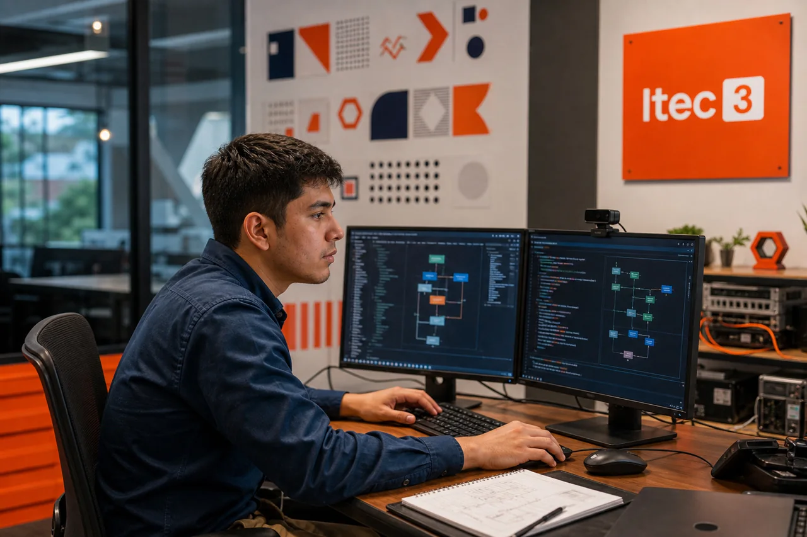

01 / TECNOLOGÍAProgramación y Análisis de Sistemas
Transformá ideas en soluciones digitales. Aprendé a analizar, desarrollar y mantener sistemas, aplicaciones y bases de datos.
Un vistazo a tu formación
- Programación Web
- Base de Datos
- Inteligencia Artificial